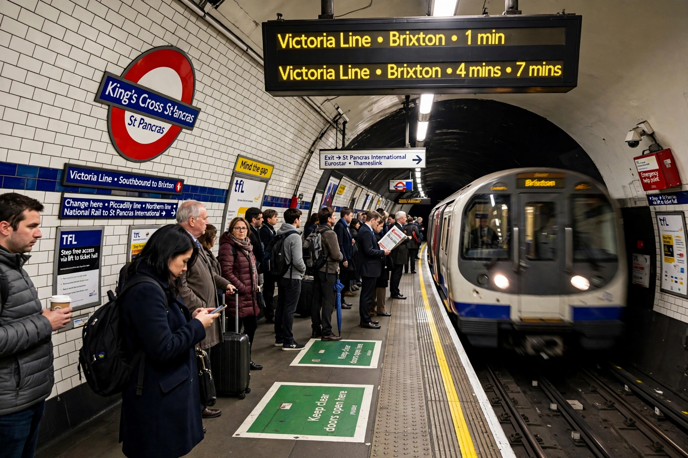

 | |
| Location | Kings Cross, London |
|---|---|
| Lines | Circle, Hammersmith & City, Metropolitan, Northern, Piccadilly, Victoria |
| Opened | 1863 (Metropolitan) |
King's Cross St Pancras is a London Underground station serving King's Cross and St Pancras main line stations, in Travelcard Zone 1. Serving six lines, it is one of the busiest stations on the network.
The Metropolitan Railway platforms opened in 1863 as part of the world's first underground railway; Piccadilly (1906), Northern (1907) and Victoria (1968) line platforms followed. The 1987 King's Cross fire, which killed 31 people in the Piccadilly line escalator area, led to major safety reforms including the smoking ban and wooden escalator removal.
Major expansion accompanied St Pancras International (2007) and King's Cross redevelopment, adding the Northern and Western ticket halls and step-free access.